9 Chapter 8 - Model comparison
Introduction, using the case of the planes coming back with holes in the wings, does that mean that one should make the wings stronger? A model will suggest that, because it only sees scenarios of where the holes are in planes that came back, hence it is conditional on planes returning, we rarely see holes in the center part. Since we only see planes coming back, we dont get to see the other condition.
The following sections elaborate on how we can model interactions, meaning how one outcome may result another.
9.1 Building an interaction
This section elaborates on what an interaction can be used at what for.
library(rethinking)
data(rugged)
d <- rugged
# make log version of outcome
d$log_gdp <- log( d$rgdppc_2000 )
# extract countries with GDP data
dd <- d[ complete.cases(d$rgdppc_2000) , ]
# rescale variables
dd$log_gdp_std <- dd$log_gdp / mean(dd$log_gdp)
dd$rugged_std <- dd$rugged / max(dd$rugged)#8.2
m8.1 <- quap(
alist(
log_gdp_std ~ dnorm( mu , sigma ) ,
mu <- a + b*( rugged_std - 0.215 ) ,
a ~ dnorm( 1 , 1 ) ,
b ~ dnorm( 0 , 1 ) ,
sigma ~ dexp( 1 )
) , data=dd )
#8.3
set.seed(7)
prior <- extract.prior( m8.1 )
# set up the plot dimensions
plot( NULL , xlim=c(0,1) , ylim=c(0.5,1.5) ,
xlab="ruggedness" , ylab="log GDP" )
abline( h=min(dd$log_gdp_std) , lty=2 )
abline( h=max(dd$log_gdp_std) , lty=2 )
# draw 50 lines from the prior
rugged_seq <- seq( from=-0.1 , to=1.1 , length.out=30 )
mu <- link( m8.1 , post=prior , data=data.frame(rugged_std=rugged_seq) )
for ( i in 1:50 ) lines( rugged_seq , mu[i,] , col=col.alpha("black",0.3) )
sum( abs(prior$b) > 0.6 ) / length(prior$b)## [1] 0.545m8.1 <- quap(
alist(
log_gdp_std ~ dnorm( mu , sigma ) ,
mu <- a + b*( rugged_std - 0.215 ) ,
a ~ dnorm( 1 , 0.1 ) ,
b ~ dnorm( 0 , 0.3 ) ,
sigma ~ dexp(1)
) , data=dd )9.1.1 Adding an indicator variable isn’t enough.
One may argue that indicator variables may be sufficient to reflect certain situations, e.g., if something is on Africa or not, hence an indicator (i.e., dummy variable) may be included in the model. Although that will just reflect the mean value of that given outcome as it is either in or out.
#8.7
# make variable to index Africa (1) or not (2)
dd$cid <- ifelse( dd$cont_africa==1 , 1 , 2 )
#8.8
m8.2 <- quap(
alist(
log_gdp_std ~ dnorm( mu , sigma ) ,
mu <- a[cid] + b*( rugged_std - 0.215 ) ,
a[cid] ~ dnorm( 1 , 0.1 ) ,
b ~ dnorm( 0 , 0.3 ) ,
sigma ~ dexp( 1 )
) , data=dd )
#8.9
compare( m8.1 , m8.2 )
|
|
|
|
|
|
#8.10
precis( m8.2 , depth=2 )
|
|
|
|
#8.11
post <- extract.samples(m8.2)
diff_a1_a2 <- post$a[,1] - post$a[,2]
PI( diff_a1_a2 )## 5% 94%
## -0.1990056 -0.1378378
#8.12
rugged.seq <- seq( from=-0.1 , to=1.1 , length.out=30 )
# compute mu over samples, fixing cid=2
mu.NotAfrica <- link( m8.2 ,
data=data.frame( cid=2 , rugged_std=rugged.seq ) )
# compute mu over samples, fixing cid=1
mu.Africa <- link( m8.2 ,
data=data.frame( cid=1 , rugged_std=rugged.seq ) )
# summarize to means and intervals
mu.NotAfrica_mu <- apply( mu.NotAfrica , 2 , mean )
mu.NotAfrica_ci <- apply( mu.NotAfrica , 2 , PI , prob=0.97 )
mu.Africa_mu <- apply( mu.Africa , 2 , mean )
mu.Africa_ci <- apply( mu.Africa , 2 , PI , prob=0.97 )plot(dd$log_gdp,dd$rugged,ylim = c(0.7,1.4))
grid()
lines(mu.NotAfrica_mu,col = "black")
lines(mu.Africa_mu,col = "blue")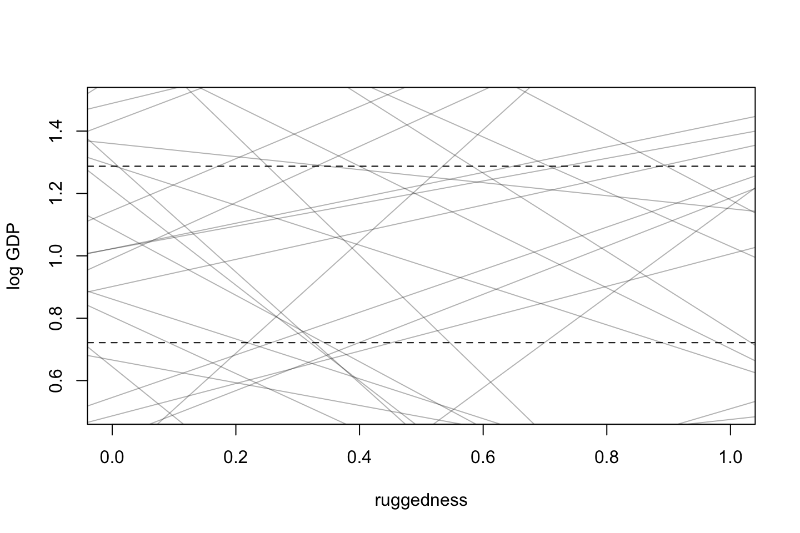
Thus we see that it is far better including an index instead of a dummy variable!!!
9.2 Symmetry of interactions
About the index approach.
9.3 Continuous interactions
9.3.1 A Winter Flower
This is an example with a flower that depends on sun and water to make photosynthesis, although having only one of the two is not useful at all, hence we need to deal with this using an interaction.
This is the data:
library(rethinking)
data(tulips)
d <- tulips
str(d)## 'data.frame': 27 obs. of 4 variables:
## $ bed : Factor w/ 3 levels "a","b","c": 1 1 1 1 1 1 1 1 1 2 ...
## $ water : int 1 1 1 2 2 2 3 3 3 1 ...
## $ shade : int 1 2 3 1 2 3 1 2 3 1 ...
## $ blooms: num 0 0 111 183.5 59.2 ...9.3.2 The models
We are going to center W (water) and S (shade).
d$blooms_std <- d$blooms / max(d$blooms)
d$water_cent <- d$water - mean(d$water)
d$shade_cent <- d$shade - mean(d$shade)We have the non centered model:
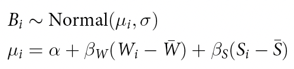
We set the priors to (we correct the sd in the following):
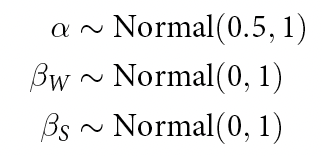
Alpha = 0.5 means that when shade and sun is at its mean, the model expects blooms to be halfway to the observed maximum.
We see that the slopes (betas) for W and S is 0, meaning that we have no idea if there is going to be relatively more shade or water, hence it will just be centered at 0.
But what does the standard deviation of 1 imply?
We see that the blooming should not go below 0 and above 1. Lets us inspect the alpha parameter and what the prior expects to see.
a <- rnorm(n = 1e4 ,mean = 0.5 ,sd = 1)
#Intercept alpha less than 0 and higher than 1
sum( a < 0 | a > 1 ) / length( a )## [1] 0.6189It implies that the priors assign most of the probability outside of the range of 0 to 1. Hence we try to constrain the priors a bit:
a <- rnorm(n = 1e4,mean = 0.5,sd = 0.25)
sum( a < 0 | a > 1 ) / length( a )## [1] 0.0443Now we see that only 5% is less than 0 and higher than 1. That is much better. Notice that we want to allow the model to reach the edges and probably go a bit above / below so we can fit data within this region.
Regarding the beta values we see that the
bw <- rnorm(n = 1e4,mean = 0,sd = 1)
dens(bw,main = "bw prior")
We also see that
bw <- rnorm(n = 1e4,mean = 0,sd = 0.25)
dens(bw,main = "bw prior")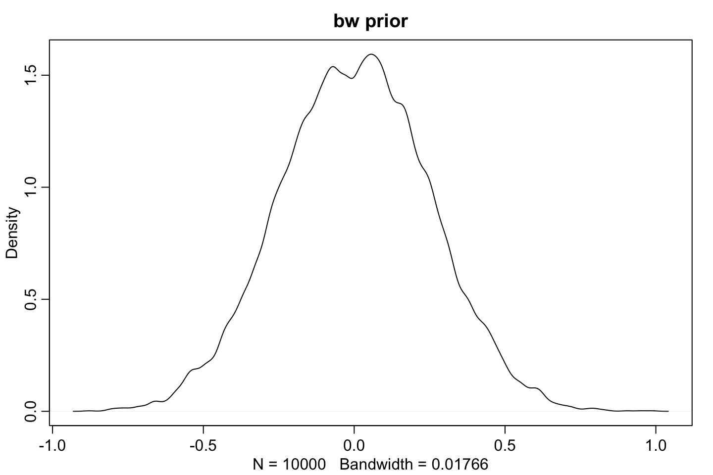
Now we see that the PI for 95% is between -0.5 and 0.5.
PI(samples = bw,0.95)## 3% 98%
## -0.4858059 0.4828205In general the goal of the priors in this example is to set priors with weak information but also constrain the model from overfitting.
The is how the model looks when finalized:
#Non interaction model!
m8.4 <- quap(
alist(
blooms_std ~ dnorm( mu , sigma ) ,
mu <- a + bw*water_cent + bs*shade_cent ,
a ~ dnorm( 0.5 , 0.25 ) ,
bw ~ dnorm( 0 , 0.25 ) ,
bs ~ dnorm( 0 , 0.25 ) ,
sigma ~ dexp( 1 )
)
,data=d )
precis(m8.4)
|
|
|
|
Building the interaction model
The model now look like this:
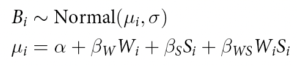
#With interaction
m8.5 <- quap(
alist(
blooms_std ~ dnorm( mu , sigma ) ,
mu <- a + bw*water_cent + bs*shade_cent + bws*water_cent*shade_cent ,
a ~ dnorm( 0.5 , 0.25 ) ,
bw ~ dnorm( 0 , 0.25 ) ,
bs ~ dnorm( 0 , 0.25 ) ,
bws ~ dnorm( 0 , 0.25 ) ,
sigma ~ dexp( 1 )
)
,data = d)9.3.3 Plotting posterior predictions
To do this, we must:
- Draw samples from
#Plotting the non interaction model
par(mfrow=c(2,3)) # 3 plots in 1 row
models <- list(m8.4,m8.5)
for(m in models){
for(s in -1:1) {
#Create index of observations given the shade level
idx <- which(d$shade_cent==s) #We have three levels -1, 0 and 1.
#Plot each water levels given the shade level
plot(d$water_cent[idx]
,d$blooms_std[idx]
,xlim=c(-1,1),ylim=c(0,1)
,xlab="water",ylab="blooms"
,pch=16,col=rangi2
)
#Draw samples
mu <- link(m #Non interaction model
,data = data.frame(shade_cent=s,water_cent=-1:1))
#Plotting 20 posterior lines
for(i in 1:20)
lines(x = -1:1,y = mu[i,]
,col=col.alpha("black",0.3))
}
}
Figure 9.1: Top row = no interaction model, bottum row = innteraction model.
9.3.4 Plotting prior predictions
Now we are going to extract priors to plot these.
set.seed(7)
prior <- extract.prior(m8.5)#Plotting the non interaction model
par(mfrow=c(2,3)) # 3 plots in 1 row
models <- list(m8.4,m8.5)
for(m in models){
for(s in -1:1) {
#Create index of observations given the shade level
idx <- which(d$shade_cent==s) #We have three levels -1, 0 and 1.
#Plot each water levels given the shade level
plot(d$water_cent[idx]
,d$blooms_std[idx]
,xlim=c(-1,1),ylim=c(-0.5,1.5)
,xlab="water",ylab="blooms"
,pch=16,col=rangi2
)
abline(h = c(0,1),lty = 2,col = "grey")
#Draw samples
mu <- link(m #Non interaction model
,data = data.frame(shade_cent=s,water_cent=-1:1)
,post = prior)
#Plotting 20 prior lines
for(i in 1:20)
lines(x = -1:1,y = mu[i,]
,col=col.alpha("black",0.3))
}
}Figure 9.2: Top row = no interaction model, bottum row = innteraction model.
We see that the priors both for the interaction and no interaction model is typically within the limits, so that is good.
We can say that the priors are:
Harmless
Weakly realistic
The priors include non or very low bias to positive or negative effects as most things can happen, although the priors tend to be in a reasonable range, hence we are doing better then a flat prior, but we do not include much information either.
9.4 Exercises
9.4.1 8M4
Repeat the tulips analysis, but this time use priors that constrain the effect of water to be positive and the effect of shade to be negative. Use prior predictive simulation. What do these prior assumptions mean for the interaction prior, if anything?
Notes:
Need to be changed, so the prior distribution is higher than 0 and less than 0, thus the distribution of the two distributions must be on each side of 0.
We can do this by manipulating the mean or the standard deviation of the dsitruibutions.
There are two difficulties with this:
- You can end up having an unrealistic mean. To avoid that, you can manipulate the standard deviation, although that may make too much certainty
- Also a normal distribution will never be strictly within some region, as it never touches 0.
Thus we can use an exponential distribution, although that only has one tail. Thus we can make a log normal distribution instead.
The model is from code chunk 8.24 - m8.5.
#Loading data
library(rethinking)
data("tulips")
d <- tulips
#' water and shade variables are three levels, ordered after amount of water/shade.
#' Cluster of plants in the same section of the greenhouse.
#' Blooms = the outcome variable which we have to predict.
#Transforming the data
d$blooms_std <- d$blooms / max(d$blooms)
d$water_cent <- d$water - mean(d$water)
d$shade_cent <- d$shade - mean(d$shade)9.4.1.1 Interaction model
Model specification
#The model
m <- quap(
alist(
blooms_std ~ dnorm(mu,sigma),
mu <- a + bw * water_cent - bs * shade_cent + bws * water_cent * shade_cent, #Notice there is minus bs
a ~ dnorm(0.5,0.25),
bw ~ dlnorm(0,0.25),
bs ~ dlnorm(0,0.25),
bws ~ dlnorm(0,0.25),
sigma ~ dexp(1)
)
,data = d
)
precis(m)
|
|
|
|
We see that the more shade, the less blooms and the more water the more blooms. Although the combination of water and shade will lead to less blooms, I guess because the plant will be drowning in water.
Prior predictive simulation
par(mfrow = c(1,1))
simulations <- 20
prior <- extract.prior(m)
for (s in -1:1) {
idx <- which(d$shade_cent == s)
plot(x = d$water_cent[idx]
,y = d$blooms[idx]
,xlim = c(-1,1), ylim = c(-0.5,1.5)
,xlab = "water"
,ylab = "blooms"
,pch = 16
,col = rangi2
,main = paste("Priors predictive simulation, S = ",s)
)
abline(h = c(0,1),lty = 2)
#Call link function to make predictions
mu <- link(fit = m
,data = data.frame(shade_cent = s, water_cent = -1:1)
,post = prior #posterior is just the prior, hence we introduce no data
)
for (i in 1:simulations) {
lines(-1:1
,mu[i,]
,col = col.alpha("black",0.3)
)
}
}
 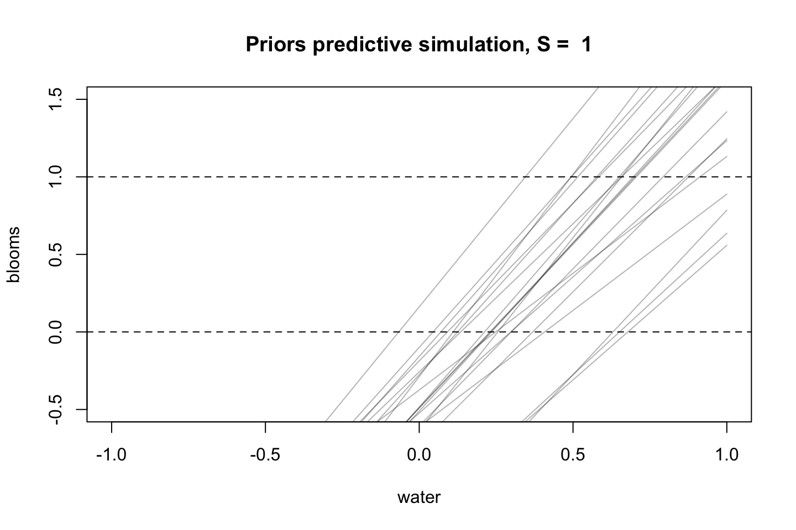
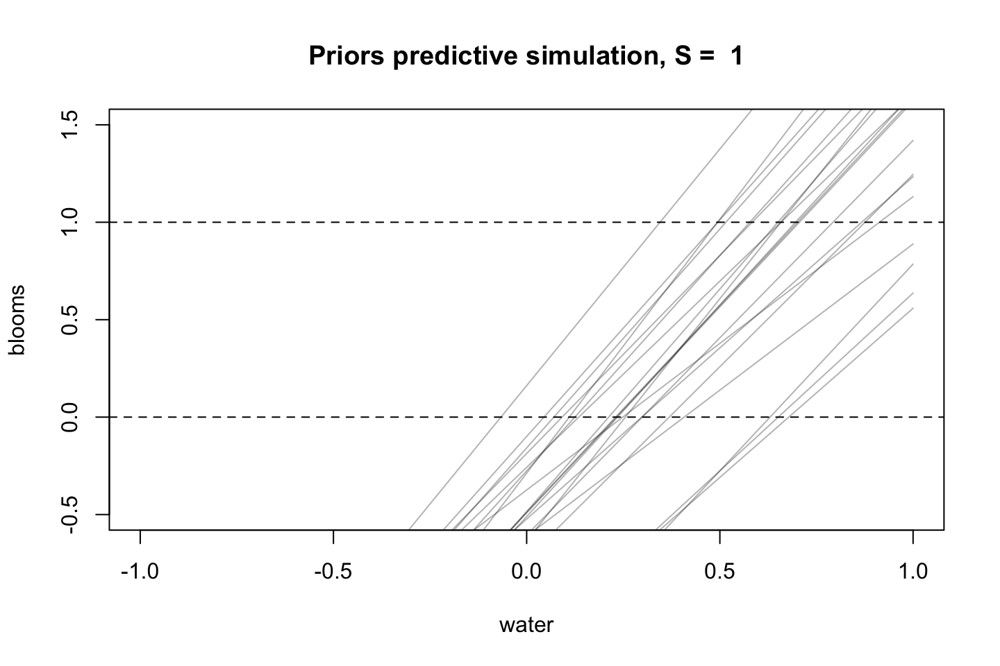
We see that we are going to regularize the priors even more, to make better priors.
#The model
m <- quap(
alist(
blooms_std ~ dnorm(mu,sigma),
mu <- a + bw * water_cent - bs * shade_cent + bws * water_cent * shade_cent, #Notice there is minus bs
a ~ dnorm(0.5,0.25),
bw ~ dlnorm(-2,0.25), #Set mean to -2
bs ~ dlnorm(-2,0.25), #Set mean to -2
bws ~ dlnorm(-2,0.25), #Set mean to -2
sigma ~ dexp(1)
)
,data = d
)
simulations <- 20
prior <- extract.prior(m)
for (s in -1:1) {
idx <- which(d$shade_cent == s)
plot(x = d$water_cent[idx]
,y = d$blooms[idx]
,xlim = c(-1,1), ylim = c(-0.5,1.5)
,xlab = "water"
,ylab = "blooms"
,pch = 16
,col = rangi2
,main = paste("Priors predictive simulation, S = ",s)
)
abline(h = c(0,1),lty = 2)
#Call link function to make predictions
mu <- link(fit = m
,data = data.frame(shade_cent = s, water_cent = -1:1)
,post = prior #posterior is just the prior, hence we introduce no data
)
for (i in 1:simulations) {
lines(-1:1
,mu[i,]
,col = col.alpha("black",0.3)
)
}
}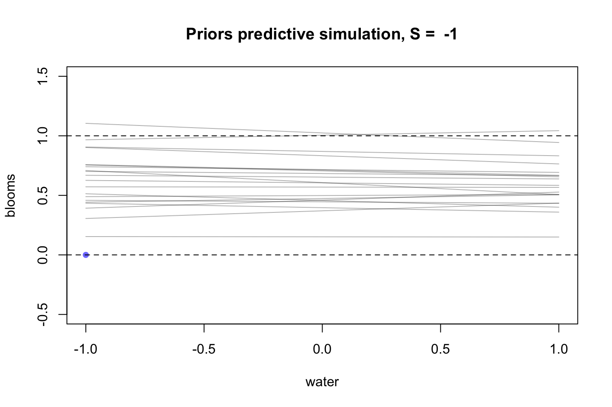

9.4.1.2 Conclusion
We see that the regularized priors are more realistic.
Never plot the priors with the actual data points, that is just done for practical reasons.
9.4.2 8H3
Consider again the data(rugged) data aon economic development and terrain ruggedness, examined in this chapter. One of the African countries in that example, Seychelles, if far outside the cloud of other nations, being a rare country with both relatively high GDP and high ruggedness. Seychelles is also unusual, in that it is a group of islands far from the coast of mainland Africa, and its main economic activity is tourism.
Focus on model
m8.5(must be m8.3) form the chapter. Use WAIC pointwise penalties and PSIS pareto k values to measure relative influence of each country. By these criteria, us Seychelles influencing the results? Are there other nations that are relatively influential? If so, can you explain way?Now use robust regression, as described in the previous chapter. Modfiy m8.5 to use a student-t distribution with v = 2. Does this chagne the results in a substantial way?
#The data
library(rethinking)
data(rugged)
d <- rugged
# make log version of outcome
d$log_gdp <- log( d$rgdppc_2000 )
# extract countries with GDP data
dd <- d[ complete.cases(d$rgdppc_2000) , ]
# rescale variables
dd$log_gdp_std <- dd$log_gdp / mean(dd$log_gdp)
dd$rugged_std <- dd$rugged / max(dd$rugged)
dd$cid <- ifelse( dd$cont_africa==1 , 1 , 2 )
#The model
m8.3 <- quap(
alist(
log_gdp_std ~ dnorm(mu,sigma),
mu <- a[cid] + b[cid] * (rugged_std - 0.215), #0.215 is the mean
a[cid] ~ dnorm(1,0.1),
b[cid] ~ dnorm(0,0.3),
sigma ~ dexp(1)
)
,data = dd
)
precis(m8.3,depth = 2)
|
|
|
|
We see that there is one intercept, if it is Africa or not and the same of the betas. Where 1 = Africa and 2 = all other.
We see that in non african countries the log of gdp (standardized) is decreasing whenever ruggedness is increasing.
Also we see that the gdp is in general higher in non african countries compared to african countries as the intercept is higher.
9.4.2.1 8H3A
Now lets answer Q A to see if there are some outlier countries
set.seed(137)
plot(PSISk(m8.3),pch = 20)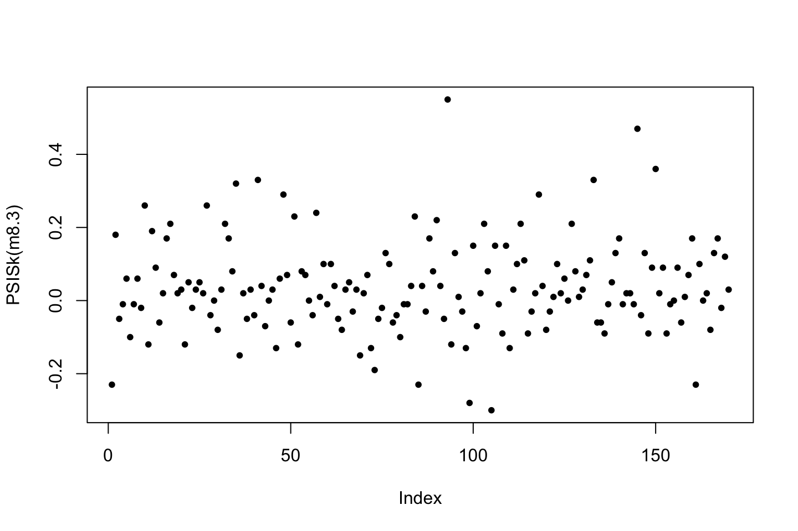
Now we see that there are some countries that seem to be having higher values than the rest. That implies that these countries are harder to estimate. Lets inspectect which these were.
set.seed(137)
dd$PSISk <- PSISk(m8.3)
head(dd[order(-dd$PSISk),c("country","cid","log_gdp_std","rugged_std","PSISk")])| country | cid | log_gdp_std | rugged_std | PSISk | |
|---|---|---|---|---|---|
| 122 | Lesotho | 1 | 0.8994088 | 1.0000000 | 0.55 |
| 199 | Seychelles | 1 | 1.1501264 | 0.7876491 | 0.47 |
| 205 | Tajikistan | 2 | 0.7826922 | 0.8547243 | 0.36 |
| 55 | Djibouti | 1 | 0.8852846 | 0.3921316 | 0.33 |
| 179 | Rwanda | 1 | 0.8155552 | 0.5335376 | 0.33 |
| 46 | Comoros | 1 | 0.8780973 | 0.5366011 | 0.32 |
We see that these countries appear to primarily bee african countries that are hard to predict. We see that Lesotho and Sychelles both are much more rugged than the other countries (the mean is 0.215), where they lie around the observed mean log_gdp_std (which is 1).
We can manually calculate some point estimates.
#Seychelles, estimate = 0.8994088
a1 = 0.89
b1 = 0.13
rug_mean = 0.215
rug_std = dd$rugged_std[dd$country == 'Seychelles']
a1 + b1 * (rug_std - rug_mean)
#Lesotho, estimate = 1.1501264
a1 = 0.89
b1 = 0.13
rug_mean = 0.215
rug_std = dd$rugged_std[dd$country == 'Lesotho']
a1 + b1 * (rug_std - rug_mean)
#Tajikistan, estimate = 0.7826922
a2 = 1.05
b2 = -0.14
rug_mean = 0.215
rug_std = dd$rugged_std[dd$country == 'Tajikistan']
a2 + b2 * (rug_std - rug_mean)## [1] 0.9644444
## [1] 0.99205
## [1] 0.9604386We see that Seychelles have a higher gdp than expected, while lesotho is lower than expected and tajikistan is much lower than expected.
9.4.2.2 8H3B
Now use robust regression, as described in the previous chapter. Modfiy m8.5 to use a student-t distribution with v = 2. Does this chagne the results in a substantial way?
#The model
m8.3b <- quap(
alist(
log_gdp_std ~ dstudent(nu = 2,mu,sigma),
mu <- a[cid] + b[cid] * (rugged_std - 0.215), #0.215 is the mean
a[cid] ~ dnorm(1,0.1),
b[cid] ~ dnorm(0,0.3),
sigma ~ dexp(1)
)
,data = dd
)
precis(m8.3b,depth = 2)
|
|
|
|
set.seed(137)
par(mar = c(4,4,3,0.3))
plot(PSISk(m8.3b),pch = 20,col = "#d8b365",sub = "Brown = robust, Blue = initial model",main = "Robust vs. Initial model"
,ylim = c(min(PSISk(m8.3b),PSISk(m8.3)),max(PSISk(m8.3b),PSISk(m8.3))),ylab = "PSISk",xlab = "Country")
points(PSISk(m8.3),pch = 20,col = "#5ab4ac")
abline(h = mean(PSISk(m8.3b)),col = "#d8b365",lty = 2)
abline(h = mean(PSISk(m8.3)),col = "#5ab4ac",lty = 2)
grid()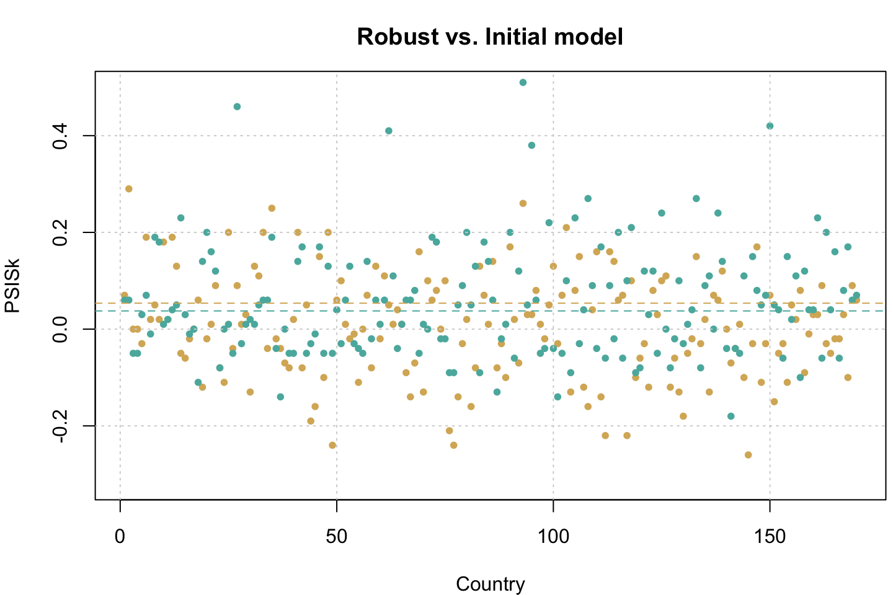
We see that the robust model is having less high values, although the overall error appears to be slightly larger, but in we missing out on less observations.
The reason is that the students t distribution is having fatter tails, thus it is less surprised when it is seeing extreme values.
Now we are able to identify the different beta parameter values for the different models. Notice that the blue model is less certain.
postN <- extract.samples(m8.3)
postT <- extract.samples(m8.3b)
diffN <- postN$b[,1] - postN$b[,2]
diffT <- postT$b[,1] - postT$b[,2]
dens(diffN,main = "Blue = Students t, Black = initial model")
dens(diffT , add=TRUE , col="blue")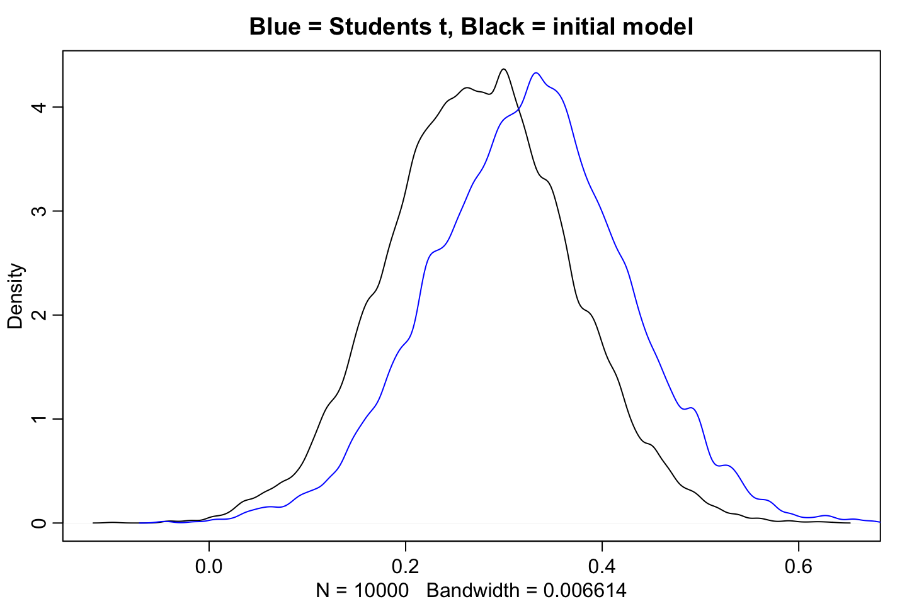
rm(list = ls())9.4.3 8H5
Consider the data(wines2012) data table. These data are expert ratings of 20 different French an America wines by 9 different French and American judges. Your goal is to model score, the subjective rating assigned buy each judge and wines. Construct index variable of judge and wine and then use these index variables to construct a linear regression model. Justify your priors. You should end up with 9 judge parameters and 20 wine parameters. How do you interpret the variation among individual judges and individual wines? Do you notice any patterns, just by plotting the differences? Which judges gave the highest/lowest ratings? Which wines were rated wors/best on average?
data("Wines2012")
d <- Wines2012
head(d)| judge | flight | wine | score | wine.amer | judge.amer |
|---|---|---|---|---|---|
| Jean-M Cardebat | white | A1 | 10 | 1 | 0 |
| Jean-M Cardebat | white | B1 | 13 | 1 | 0 |
| Jean-M Cardebat | white | C1 | 14 | 0 | 0 |
| Jean-M Cardebat | white | D1 | 15 | 0 | 0 |
| Jean-M Cardebat | white | E1 | 8 | 1 | 0 |
| Jean-M Cardebat | white | F1 | 13 | 1 | 0 |
Lets create the indexes:
d$wid <- as.integer(d$wine)
d$jid <- as.integer(d$judge)
d$score_std <- standardize(d$score)
d <- d[,!(colnames(d) %in% c("wine.amer","judge.amer"))] #remove unnecessary columns
head(unique(d))| judge | flight | wine | score | wid | jid | score_std |
|---|---|---|---|---|---|---|
| Jean-M Cardebat | white | A1 | 10 | 1 | 4 | -1.5766041 |
| Jean-M Cardebat | white | B1 | 13 | 3 | 4 | -0.4504583 |
| Jean-M Cardebat | white | C1 | 14 | 5 | 4 | -0.0750764 |
| Jean-M Cardebat | white | D1 | 15 | 7 | 4 | 0.3003055 |
| Jean-M Cardebat | white | E1 | 8 | 9 | 4 | -2.3273680 |
| Jean-M Cardebat | white | F1 | 13 | 11 | 4 | -0.4504583 |
Notice that the values are standardized, hence the prior should also have that in mind. See the following distribution of a prior suggestion.
dens(rnorm(n = 1000,mean = 0,sd = 0.2),main = "Prior - mean = 0, sd = 0.2")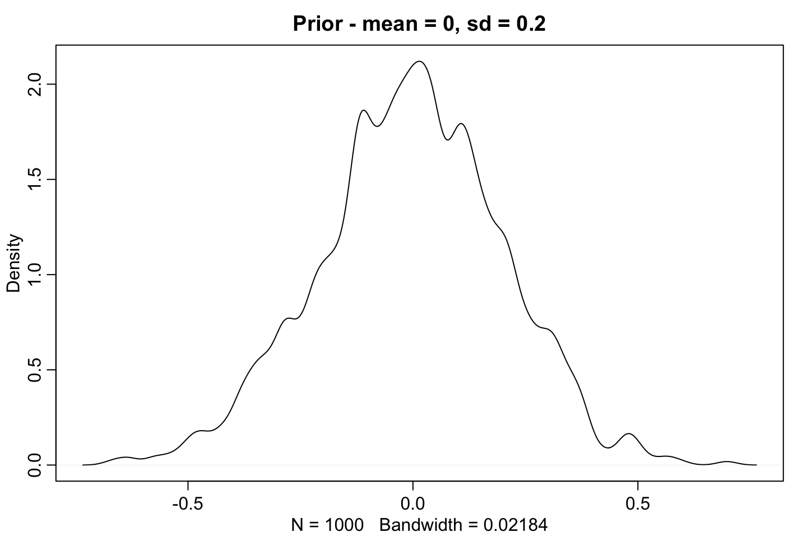
m <- quap(
alist(
score_std ~ dnorm(mu,sigma),
mu <- a1[wid] + a2[jid] + sigma,
a1[wid] ~ dnorm(0,0.2), #We say it is around the center of all wines
a2[jid] ~ dnorm(0,0.2), #We say it is around the center of all wines
sigma ~ dexp(1) #tend towards 0, but decreases exponentially
)
,data = d
)
precis(m,depth = 2)
|
|
|
|
We can extract priors for the two intercepts. We see that they end up being very similar, as expected.
dens(extract.prior(fit = m,n = 1000)$a1)
dens(extract.prior(fit = m,n = 1000)$a2,add = T,col = "darkblue")Now it would be nice to inspect the point estimates for each wine and judge and see the span of these. Although plot(precis()) does not appear to work in this example.
9.4.4 8H6
Now consider three features of the wines and judges:
- fLight: Whether the wine is red or white.
- wine.amer: indicator variable for american wines
- judge.amer: indicator variable for american judges
use indicator or index variales to model the influence o these features on the scores. Omit the individual judge and ine index variable from Problem 1. DO not include interaction effects yet.
Again justify your priors. What do you conclude about the differences among the wines and judge?
Try to relate the results to the inferences in the previous problem.
Reasoning for the priors
- Since the values are standardized everything is measured on a standard deviation scale, thus we also expect the values to be around the center. That is also the reason that we have a narrow distribution for the intercept (0.2).
- We set the priors for the slopes a bit wider. As we expect that there may be greater deviances in this, an thus we allow the mode to pick up on ‘extreme’ observations.
library(rethinking)
data("Wines2012")
d <- Wines2012
d$fid <- as.integer(I(d$flight == 'red')) #1 = red, 0 = white
d$score_std <- standardize(d$score)
d <- d[,(colnames(d) %in% c("score_std","fid","wine.amer","judge.amer"))] #keep relevant columns
#' Notice that wine.amer and judge.amer is both integer, 0 and 1, thus no transformation is needed.
m <- quap(
alist(
score_std ~ dnorm(mu,sigma),
mu <- a + bF*fid + bWA*wine.amer + bJA*judge.amer,
a ~ dnorm(0,0.2), #We say it is around the center of all wines
bF ~ dnorm(0,0.2), #We say it is around the center of all wines
bWA <- dnorm(0,0.5), #We assume that the coefficient can both be positive and negative
bJA <- dnorm(0,0.5), #Same assumption as above
#Alternative way of writing out this: c(bW,bJ,bR) ~ dnorm( 0 , 0.5 ),
sigma ~ dexp(1) #tend towards 0, but decreases exponentially
)
,data = d
)
precis(m,depth = 2)
|
|
|
|
Now I have created an indicator model, where there is simply one intercept, and on slope across all categories, one may have used an index model instead.
We see that:
- the slope for the flight goes on both sides of 0, hence one cannot do inference on this. Also indicating that red and white wine are rated more or less the same.
- We see that if the wine is american, then the wine tend to be rated lower, on average by the wine being american, the standardized rating decrease by 0.18. Although notice that we have a little probability space on the positive side of 0 (that is dependent on the interval we want to do inference on)
- The ratings appear to be higher when we have an american judge.
9.4.5 8H7
Now consider two_way interactions among the fhree features. You should end up with three different interaction terms in your model. THese will be easier to buiild, if you use indicator variables. Again justify the priors. Explain what each interaction measn. Be sure to interpret the model’s predictions on the outcome scale (mu, expected score), not on the scale of individial parameters.
You can use link to help with this, or just use your knowledge of th elinear model insteat. What do you conclude about the features and the scores? Can you relate the results of your model(s) to the individual judge and wine inferences from 8H5?
Notes on the priors
- Notice that the prior for an interaction effect should not be flatter than the slope for the variable, that being because the variance should not be more extreme in these subgroups of the data!!!
- Otherwise the arguments are the same.
library(rethinking)
data("Wines2012")
d <- Wines2012
d$fid <- as.integer(I(d$flight == 'red')) #1 = red, 0 = white
d$score_std <- standardize(d$score)
d <- d[,(colnames(d) %in% c("score_std","fid","wine.amer","judge.amer"))] #keep relevant columns
#' Notice that wine.amer and judge.amer is both integer, 0 and 1, thus no transformation is needed.
m_interaction <- quap(
alist(
score_std ~ dnorm(mu,sigma),
mu <- a + bF*fid + bWA*wine.amer + bJA*judge.amer + bi1*fid*wine.amer + bi2*fid*judge.amer + bi3*wine.amer*judge.amer,
a ~ dnorm(0,0.2), #We say it is around the center of all wines
bF ~ dnorm(0,0.2), #We say it is around the center of all wines
bWA <- dnorm(0,0.5), #We assume that the coefficient can both be positive and negative
bJA <- dnorm(0,0.5), #Same assumption as above
bi1 <- dnorm(0,0.5), #prior for the interaction between flight and wine amer
bi2 <- dnorm(0,0.5), #prior for the interaction between flight and judge amer
bi3 <- dnorm(0,0.5), #prior for the interaction between wine amer and judge amer
# Notice one could say c(bi1,bi2,bi3) <- dnorm(0,0.5)
sigma ~ dexp(1) #tend towards 0, but decreases exponentially
)
,data = d
)
precis(m_interaction,depth = 2) #Notice if combatibility interval is lower then also a narrower intercal
|
|
|
|
9.4.5.1 Predictions
Now we can make some predictions. Notice that we need to first generate some data. Then link can be used to map the data to the model and produce outputs.
pred_data <- data.frame(
fid = rep(0:1, times = 4),
wine.amer = rep(0:1, each=4),
judge.amer = rep(c(0,0,1,1),times = 2)
)
head(pred_data)| fid | wine.amer | judge.amer |
|---|---|---|
| 0 | 0 | 0 |
| 1 | 0 | 0 |
| 0 | 0 | 1 |
| 1 | 0 | 1 |
| 0 | 1 | 0 |
| 1 | 1 | 0 |
#Predict averages
mu <- link(m_interaction,data = pred_data)
#Generate row names for the observations, used for the plot
row_labels <- paste( ifelse(pred_data$fid==1,"R","W") ,
ifelse(pred_data$judge.amer==1,"A","F") ,
ifelse(pred_data$wine.amer==1,"A","F") , sep="" )
plot( precis( list(mu=mu) , 2 ) , labels=row_labels )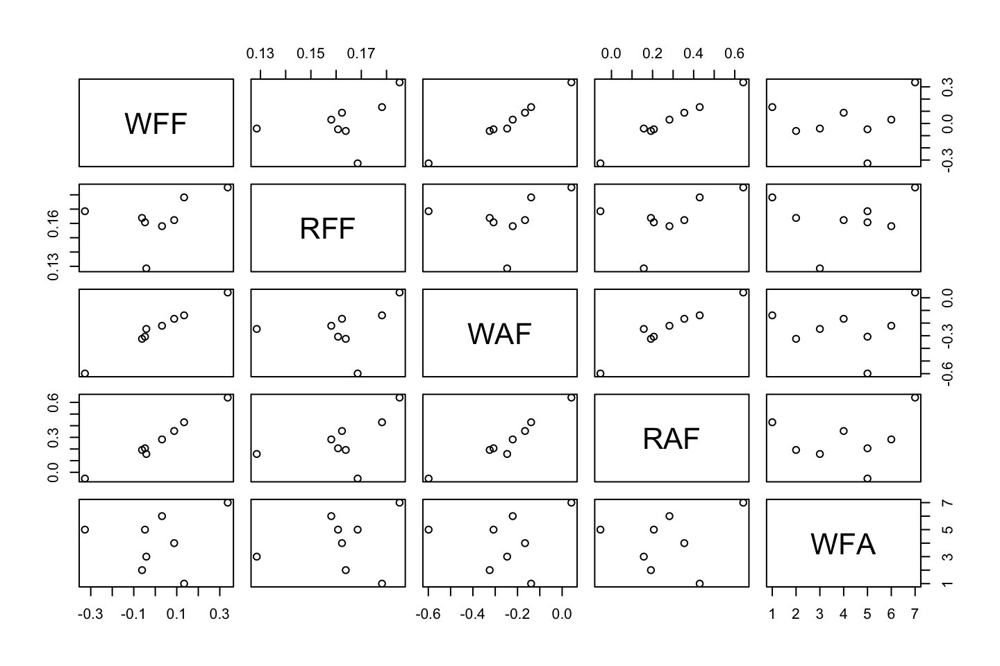
In general we expect red wines that have an american judge but the wine is not american.
Why plot this?
From the precis table it is hard to make these relations, although when we plot the combinations, it is far easier to make these correlations.